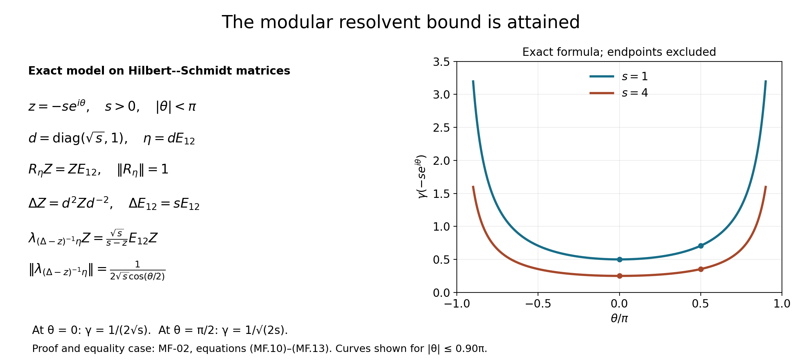
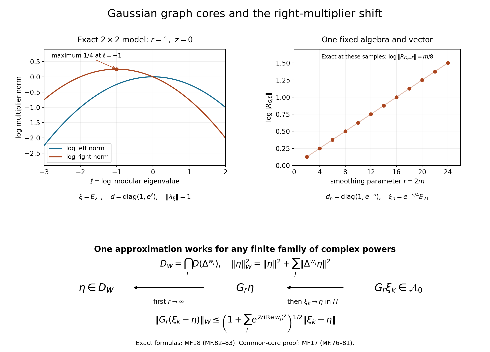

The modular group and its analytic algebra
A left Hilbert algebra determines a closed real subspace, two bounded projections, a conjugation and a unitary group. The preceding proof notes construct these objects and identify them with the original modular data, with every unbounded domain included. We use that construction here to obtain the commutant and covariance statements, a sharp resolvent multiplier estimate, and the joint graph core needed for the weak operator equation. The later sections develop the analytic algebra.
The free human source for the general modular construction is Marc A. Rieffel and Alfons Van Daele, A bounded operator approach to Tomita–Takesaki theory, especially Sections 4–6. The complete written programme proofs used here are supplied in order by real coercivity RC, bounded right multiplication GP, real-subspace geometry RS, integrals and uniqueness IK, commutants and full completion MC, and the original modular operator MP. Their scalar analytic inputs are the written programme proofs linked in IK. A citation to the human source is not a replacement for these proofs.
Starting data, full completion and exact inputs
Let \(\mathcal C\subset H\) be any left Hilbert algebra. Apply the full-completion construction MC1–MC6 to obtain \(\mathcal A=\mathcal C''\). It retains the original closed involution \(S\), real subspace, conjugation and generated operator algebra \(M\). Let \(\mathcal D\) be its full right algebra of vectors.
There is a product convention to specify. In MC the dual is itself a left Hilbert algebra, with \(u\circ v=R_uv\). In this course the right product is the opposite product,
\[ \eta\theta=R_\theta\eta,\qquad R_{\eta\theta}=R_\theta R_\eta. \]Thus \(\mathcal D^{\mathrm{op}}\) is the left Hilbert algebra called \(\mathcal A'\) in MC. The vector space, involution \(F\), and operators \(R_\eta\) agree. Write \(\lambda_\xi\) for the left operator called \(L_\xi\) in those notes.
Define \(\mathcal B_l\) to be the vectors \(\xi\in H\) for which \(\eta\mapsto R_\eta\xi\), initially on \(\mathcal D\), has a bounded extension \(\lambda_\xi\). Define \(\mathcal B_r\) symmetrically using the full left algebra. The representations are injective by MC1's nondegeneracy. Then
\[ M=\lambda(\mathcal A)'',\quad M'=R(\mathcal D)'',\quad F=S^*,\quad \mathcal A=\mathcal B_l\cap D(S),\quad \mathcal D=\mathcal B_r\cap D(F). \tag{MF.1} \]Here the commutant assertion is MC2, and the adjoint assertion is MP1. We justify the full-domain characterization explicitly. If \(\xi\in\mathcal B_l\cap D(S)\), let \(W=\lambda_\xi\). For \(\eta,\theta\in\mathcal D\), the algebra involution and adjoint tests give
\[ \begin{aligned} \langle R_\eta S\xi,\theta\rangle &=\langle S\xi,R_\eta^*\theta\rangle =\langle F(R_\eta^*\theta),\xi\rangle\\ &=\langle R_{F\theta}\eta,\xi\rangle =\langle\eta,R_\theta\xi\rangle =\langle W^*\eta,\theta\rangle . \end{aligned} \]The intermediate vector \(R_\eta^*\theta=\theta(F\eta)\) belongs to \(\mathcal D\), so the unbounded adjoint pairing is legitimate. Density gives \(R_\eta S\xi=W^*\eta\). These are both defining tests for the full left completion, so \(\xi\in\mathcal A\). The reverse inclusion is part of that definition and the closed-involution identification in MC5–MC6. Swapping the two algebras proves the right assertion.
For algebra vectors, the defining relation is \(\lambda_\xi\eta=R_\eta\xi\); WH-04 proves its extension to the two bounded-vector spaces:
\[ \lambda_\xi\eta=R_\eta\xi \quad(\xi\in\mathcal B_l,\ \eta\in\mathcal B_r). \tag{MF.2} \]The core modular and resolvent arguments below use the defining algebra-vector cases. The additional bounded-vector and weight conclusions retain WH-04 and WH-02/11 as their written programme inputs.
MP1–MP6 prove
\[ \Delta=FS=S^*S,\quad S=J\Delta^{1/2},\quad F=J\Delta^{-1/2},\quad J^2=I,\quad J\Delta J=\Delta^{-1}. \tag{MF.3} \]The operator \(\Delta\) is injective, positive and self-adjoint; \(J\) is antiunitary. Put \(U_t=\Delta^{it}\). The continuous imaginary-power construction is MP6. For the complex powers used in the analytic sections, SK-07–08 supply their written power-domain and transport proofs:
\[ J\Delta^zJ=\Delta^{-\overline z},\qquad JU_t=U_tJ. \tag{MF.4} \]Every equality includes its transported domain.
For later domain calculations, retain the bounded projection sum \(R\) of RS and put \(C=R^{1/2}\), \(D=(2I-R)^{1/2}\). These letters denote bounded operators; \(\mathcal D\) continues to denote the right algebra. The graph formulas proved in MP are
\[ D(S)=\operatorname{ran}C,\quad S(Cu)=JDu,\quad D(F)=\operatorname{ran}D,\quad F(Du)=JCu, \tag{MF.5} \] \[ D(\Delta)=\operatorname{ran}R,\quad \Delta(Ru)=(2I-R)u,\quad CD=T,\quad C^2+D^2=2I. \tag{MF.6} \]They provide the required domains through bounded coordinates.
The real modular covariance on both full algebras and the commutant equality are already proved in MC4/MC7 and identified with the original data in MP6. MF-05–06 collect those conclusions in the current product convention. Thus the multiplier estimate below can be proved as a consequence of that earlier complete programme argument.
The resolvent creates bounded multiplication
For \(z\in\mathbb C\setminus[0,\infty)\), define
\[ \gamma(z)=\frac1{\sqrt{2(|z|-\operatorname{Re}z)}}. \tag{MF.7} \]We prove, with this exact constant,
\[ (\Delta-z)^{-1}\eta\in\mathcal A,\qquad \|\lambda_{(\Delta-z)^{-1}\eta}\| \leq\gamma(z)\|R_\eta\|\quad(\eta\in\mathcal D), \tag{MF.8} \]and symmetrically
\[ (\Delta^{-1}-z)^{-1}\xi\in\mathcal D,\qquad \|R_{(\Delta^{-1}-z)^{-1}\xi}\| \leq\gamma(z)\|\lambda_\xi\|\quad(\xi\in\mathcal A). \tag{MF.9} \]Write uniquely \(z=-s e^{i\theta}\), where \(s=|z|>0\) and \(-\pi<\theta<\pi\), and put
\[ w(t)=\frac1{e^{\pi t}+e^{-\pi t}},\qquad a_z(t)=s^{-1/2-it}e^{-i\theta/2}e^{\theta t}w(t). \]The strip formula IK1, applied to \(f(\zeta)=e^{b\zeta}\) at parameter \(-\theta\), gives for real \(b\)
\[ \int_{\mathbb R}e^{\theta t}w(t)e^{itb}\,dt =\frac1{e^{-i\theta/2}e^{b/2} +e^{i\theta/2}e^{-b/2}}. \]The function is bounded on the vertical strip, as required there. Substituting \(b=\log(u/s)\) yields
\[ \frac{\sqrt u}{u-z} =\int_{\mathbb R}a_z(t)u^{it}\,dt,\qquad \int_{\mathbb R}|a_z(t)|\,dt =\frac1{2\sqrt s\cos(\theta/2)} =\gamma(z). \tag{MF.10} \]Absolute integrability follows from \(|\theta|<\pi\). In particular the scalar function \(\sqrt u/(u-z)\) is bounded by \(\gamma(z)\).
The operator version follows from MP6's bounded continuous calculus. Here are the interchange details. Multiply \(u^{it}\), in the coordinate \(u=(2-r)/r\), by the endpoint cutoff \(g_n(r)\) of RS3. On every finite \(t\)-interval these functions are jointly continuous on the compact \(r\)-interval after extending by zero at its endpoints. Uniform Riemann approximation and GP0's norm bound therefore commute the finite integral with the calculus. The tail is uniformly bounded by \(\int|a_z|\) over the omitted set. First pass to the whole integral and then use \(g_n(R)\to I\) strongly. This proves the vectorwise identity corresponding to (MF.10), without operator-norm continuity of \(U_t\).
Fix \(\eta\in\mathcal D\). The vector \(b=JF\eta=\Delta^{-1/2}\eta\) belongs to \(\mathcal A\), by MC6 applied to the dual full algebra, and \(\lambda_b=JR_\eta^*J\). Consequently
\[ \xi_z=\int_{\mathbb R}a_z(t)U_tb\,dt =(\Delta-z)^{-1}\eta. \tag{MF.11} \]For the last equality, write \(\eta=Du\), so \(b=Cu\), using (MF.5). The bounded scalar functions in the preceding integral give
\[ \left[\frac{\sqrt v}{v-z}\right](\Delta)C =R[(2I-R)-zR]^{-1}D. \]The right side applied to \(u\) is the actual resolvent applied to \(\eta\): its range is in \(\operatorname{ran}R=D(\Delta)\), and multiplication by \(\Delta-z\) gives \(\eta\). The denominator is a nonvanishing continuous function on \([0,2]\); its zeros there would force \(z\geq0\). GP0 supplies its bounded reciprocal.
We verify bounded multiplication and algebra membership of the integral, not just Hilbert-norm convergence. Since MC7 gives \(SU_tb=U_tSb\), the integral of the graph pairs shows
\[ S\xi_z=\int_{\mathbb R}\overline{a_z(t)}U_tSb\,dt. \]Indeed finite Riemann sums belong to the graph, both coordinates converge by their absolute tail estimates, and \(S\) is closed. Define the bounded operator by vectorwise integration
\[ W_z=\int_{\mathbb R}a_z(t)\, U_tJR_\eta^*JU_{-t}\,dt,\qquad \|W_z\|\leq\gamma(z)\|R_\eta\|. \tag{MF.12} \]The integrand is strongly continuous, as proved for such orbits in IK3. For \(\omega\in\mathcal D\), commute its fixed bounded \(R_\omega\) through the vector integral. MC7's multiplier formula gives \(R_\omega\xi_z=W_z\omega\). Applying the same argument to the conjugated graph integral gives \(R_\omega S\xi_z=W_z^*\omega\); adjoints of the operator integral are obtained by pairing with vectors. These are the two full-algebra tests, so \(\xi_z\in\mathcal A\) and \(\lambda_{\xi_z}=W_z\). This proves (MF.8). Apply the same proof to \(\mathcal D^{\mathrm{op}}\), whose positive modular operator is \(\Delta^{-1}\), to obtain (MF.9).
The constant is attained. In the matrix model of MC8, use \(d=\operatorname{diag}(\sqrt s,1)\), \(\rho=d^2\), and \(\eta=dE_{12}=\sqrt s E_{12}\). The same direct matrix verification as in MC8 gives \(R_\eta Z=ZE_{12}\), of norm one, and \(\Delta E_{12}=sE_{12}\). Hence
\[ \lambda_{(\Delta-z)^{-1}\eta}Z =\frac{\sqrt s}{s-z}E_{12}Z,\qquad \|\lambda_{(\Delta-z)^{-1}\eta}\| =\frac{\sqrt s}{|s-z|}=\gamma(z). \tag{MF.13} \]The equality \(\|Z\mapsto E_{12}Z\|=1\) follows by testing \(E_{21}\) for the lower bound and by comparing squared matrix entries for the upper bound. The right-multiplication norm is checked in the same way. In particular \(\gamma(-s)=1/(2\sqrt s)\).

Figure. The model and norm calculation are proved in (MF.13). The curves draw the exact expression (MF.10) for \(s=1,4\) and \(|\theta|\leq0.90\pi\); the excluded endpoints \(\theta=\pm\pi\) correspond to the positive real axis. Every point of either curve is attained by the displayed matrix model with that value of \(s\). Reproducible figure source.
A common domain for the two half powers
Put \(A=\Delta^{1/2}\) in this section, and set
\[ V=D(A)\cap D(A^{-1}),\qquad \|\zeta\|_V^2=\|\zeta\|^2+\|A\zeta\|^2+\|A^{-1}\zeta\|^2. \tag{MF.14} \]We prove that \(\mathcal A\cap D(\Delta^{-1/2})\) is dense in \(V\) for this joint norm.
The bounded coordinates in (MF.5–6) give \(V=\operatorname{ran}T\). One inclusion follows from \(T=CD\). Conversely, if \(x=Cu=Dv\), then \(x=CD(Du+Cv)/2\), using \(C^2+D^2=2I\). On \(x=Tu\) they also give
\[ Ax=D^2u,\qquad A^{-1}x=C^2u,\qquad (A+A^{-1})x=2u. \]Thus \(Q=A+A^{-1}\) has exactly the domain \(V\), and \(Q^{-1}=T/2\), \(AQ^{-1}=(2I-R)/2\), \(A^{-1}Q^{-1}=R/2\) are bounded, the latter two by one.
Since \(F\mathcal D=\mathcal D\) and \(J\mathcal D=\mathcal A\), the set \(A^{-1}\mathcal D=JF\mathcal D=\mathcal A\) is dense in \(H\). For \(\zeta\in V\), choose \(\eta_n\in\mathcal D\) such that \(A^{-1}\eta_n\to Q\zeta\), and set \(\zeta_n=(I+\Delta)^{-1}\eta_n\). MF-02 gives \(\zeta_n\in\mathcal A\). If \(\eta_n=Du_n\), the exact inverse \(R/2\) gives \(\zeta_n=TCu_n/2\in V\) and \(Q\zeta_n=Cu_n=A^{-1}\eta_n\). Apply the three bounded operators \(Q^{-1},AQ^{-1},A^{-1}Q^{-1}\) to obtain convergence in (MF.14). This proves the required joint graph density.
The resolvent satisfies a weak operator equation
For \(s>0,\eta\in\mathcal D\), put
\[ \xi=(\Delta+s)^{-1}\eta,\qquad X=R_\eta,\qquad Y=J\lambda_\xi^*J. \tag{MF.15} \]These are bounded multipliers by MF-02 and the preceding modular construction. For all \(\zeta_1,\zeta_2\in V\),
\[ \langle X\zeta_1,\zeta_2\rangle =\langle Y\Delta^{-1/2}\zeta_1,\Delta^{1/2}\zeta_2\rangle +s\langle Y\Delta^{1/2}\zeta_1,\Delta^{-1/2}\zeta_2\rangle. \tag{MF.16} \]To prove it, first take \(\zeta_j\in\mathcal A\cap D(F)\). Let \(v=(S\zeta_1)\zeta_2\in\mathcal A\). Its involution is \(Sv=(S\zeta_2)\zeta_1\), and the multiplier adjoint identity gives
\[ \langle X\zeta_1,\zeta_2\rangle =\langle\eta,v\rangle =\langle\Delta\xi,v\rangle+s\langle\xi,v\rangle. \tag{MF.17} \]The two half-power terms can now be checked from the actual adjoint pairings:
\[ \begin{aligned} \langle Y\Delta^{1/2}\zeta_1,\Delta^{-1/2}\zeta_2\rangle &=\langle F\zeta_2,(S\xi)(S\zeta_1)\rangle\\ &=\langle S((S\xi)(S\zeta_1)),\zeta_2\rangle\\ &=\langle\zeta_1\xi,\zeta_2\rangle =\langle\xi,v\rangle , \end{aligned} \tag{MF.18} \]and
\[ \begin{aligned} \langle Y\Delta^{-1/2}\zeta_1,\Delta^{1/2}\zeta_2\rangle &=\langle S\zeta_2,\lambda_\xi^*F\zeta_1\rangle\\ &=\langle\xi S\zeta_2,F\zeta_1\rangle =\langle\zeta_1,S(\xi S\zeta_2)\rangle\\ &=\langle(S\zeta_2)\zeta_1,S\xi\rangle =\langle\Delta\xi,v\rangle . \end{aligned} \tag{MF.19} \]The first equalities use antiunitarity and (MF.3). Every product subjected to \(S\) is in \(\mathcal A\), and \(\xi\in D(\Delta)\), so the last adjoint pairing is defined. Substitution gives (MF.16) on the test space. Both sides are continuous sesquilinear forms in the joint norm (MF.14), because \(X,Y\) are bounded. MF-03 therefore extends it to all of \(V\). This argument keeps both half-power domains throughout.
The commutant and the integral orbit identity
For \(r\in\mathbb R\), define the bounded vectorwise operator integral
\[ k_r(t)=e^{-irt}w(t),\qquad \mathcal R_r(X)=\int_{\mathbb R}k_r(t)U_tXU_{-t}\,dt. \tag{MF.20} \]The strong continuity of the orbit and its uniform norm bound give \(\|\mathcal R_r(X)\|\leq\|X\|/2\), by IK1.4.
The modular construction supplies, for \(\eta\in\mathcal D\),
\[ JU_t\eta\in\mathcal A,\qquad \lambda_{JU_t\eta}=JU_tR_\eta U_{-t}J, \tag{MF.21} \]and
\[ J\mathcal D=\mathcal A,\quad J\mathcal A=\mathcal D,\quad JMJ=M',\quad JM'J=M. \tag{MF.22} \]For precision, the sequence of written proofs giving these conclusions is the following. IK6 first proves covariance on the product core by weighted Fourier uniqueness. MC1 then proves right-product density; MC2 constructs the bounded approximate identity and identifies its generated algebra with the commutant. MC3 identifies the dual real subspace, whose group is \(U_{-t}\). Applying IK7 to both algebras gives the two inclusions \(U_tJMJU_{-t}\subset M'\) and \(U_{-t}JM'JU_t\subset M\). At zero they imply \(JMJ=M'\); using opposite parameters gives equality of the invariant algebras. MC6–MC7 extend the vector identities to the full algebras. Applying their dual formula at parameter \(-t\) gives (MF.21). MP4–MP6 identify all these operators with the original \(S^*S\) and its imaginary powers. These are earlier written programme proofs, with no general spectral or commutant theorem substituted for a missing argument.
The resolvent integral remains available as a useful quantitative identity:
\[ \mathcal R_r(R_\eta) =e^{r/2}J\lambda_{(\Delta+e^r)^{-1}\eta}^*J. \tag{MF.23} \]Indeed (MF.12) at \(z=-e^r\) has coefficient \(e^{-r/2}e^{-irt}w(t)\). Taking the adjoint conjugates that coefficient; conjugating by the antiunitary \(J\) conjugates it again. Since \(JU_t=U_tJ\), the result is precisely (MF.23).
For \(\zeta\in\mathcal D\), putting \(\xi_r=(\Delta+e^r)^{-1}\eta\), this also yields
\[ \begin{aligned} \mathcal R_r(R_\eta)J\zeta &=e^{r/2}J R_\zeta S\xi_r\\ &=JR_\zeta J \int_{\mathbb R}k_r(t)U_t\eta\,dt. \end{aligned} \tag{MF.24} \]The first line uses \(\lambda_{\xi_r}^*=\lambda_{S\xi_r}\). For the second, (MF.10) at \(\theta=0,s=e^r\) identifies \(e^{r/2}\Delta^{1/2}(\Delta+e^r)^{-1}\) with that integral. Consequently
\[ \int_{\mathbb R}k_r(t) [U_tR_\eta U_{-t}J\zeta-JR_\zeta JU_t\eta]\,dt=0. \tag{MF.25} \]IK5's proved Fourier uniqueness, after pairing with any Hilbert vector and multiplying the bracket by \(w(t)\), recovers the pointwise equality and therefore
\[ JU_tR_\eta U_{-t}J\zeta=R_\zeta JU_t\eta . \tag{MF.26} \]The bounded continuous bracket makes the scalar test continuous and integrable, so uniqueness holds at every \(t\). Each Hilbert pairing is tested separately; no countable separating family is needed.
The modular fundamental theorem
Theorem. The strongly continuous unitary group \(U_t=\Delta^{it}\) satisfies
\[ U_t\mathcal A=\mathcal A,\qquad U_t\mathcal D=\mathcal D, \tag{MF.27} \] \[ \lambda_{U_t\xi}=U_t\lambda_\xi U_{-t},\qquad R_{U_t\eta}=U_tR_\eta U_{-t}, \tag{MF.28} \]and consequently
\[ U_t M U_{-t}=M,\qquad U_t M'U_{-t}=M'. \tag{MF.29} \]On each algebra the action is by complex-linear involution-preserving algebra automorphisms. The map \(J\) is a conjugate-linear involution-preserving algebra anti-isomorphism between \(\mathcal A\) and \(\mathcal D\):
\[ J(\xi\zeta)=(J\zeta)(J\xi),\qquad J(S\xi)=F(J\xi). \tag{MF.30} \]Together with (MF.22), these are the modular fundamental theorem for the original arbitrary left Hilbert algebra \(\mathcal C\). The invariant left algebra is its full completion \(\mathcal A\); the original core \(\mathcal C\) need not itself be invariant.
Proof. For \(\xi\in\mathcal A\), write \(\xi=J\eta\) with \(\eta\in\mathcal D\). Equations (MF.4) and (MF.21) give \(U_t\xi=JU_t\eta\in\mathcal A\), and
\[ \lambda_{U_t\xi} =JU_tR_\eta U_{-t}J =U_t\lambda_\xi U_{-t}. \]Applying this also to \(-t\) gives equality of the invariant spaces. The symmetric argument gives the assertions for \(\mathcal D\), proving (MF.27–28). Generated algebras give (MF.29).
Spectral calculus in (MF.3–4) gives \(S U_t=U_t S\) on \(D(S)\), and \(F U_t=U_t F\) on \(D(F)\). For \(\xi,\zeta\in\mathcal A\),
\[ U_t(\xi\zeta) =U_t\lambda_\xi\zeta =\lambda_{U_t\xi}U_t\zeta. \]This proves the algebra and involution assertions, and the right case follows with its specified product order.
The identity \(\lambda_{J\eta}=JR_\eta J\) from MF-05 at \(t=0\), applied to \(\eta=J\xi\), gives \(J\lambda_\xi J=R_{J\xi}\). Therefore
\[ J(\xi\zeta)=R_{J\xi}J\zeta=(J\zeta)(J\xi). \]The domain identity \(FJ=JS\) follows from (MF.3–4), proving the second formula of (MF.30). \(\square\)
Bounded-vector extension. The same covariance holds for every \(\xi\in\mathcal B_l\) and \(\eta\in\mathcal B_r\). For example, for \(\theta\in\mathcal D\),
\[ R_\theta U_t\xi =U_tR_{U_{-t}\theta}\xi =U_t\lambda_\xi U_{-t}\theta. \]This proves left boundedness of \(U_t\xi\) and identifies its operator; applying \(-t\) gives equality of the spaces. The right proof is symmetric.
Weight consequence. Let \(\varphi\) be a faithful normal semifinite weight with the GNS representation and full Hilbert algebra constructed in WH. Its modular automorphisms are
\[ \sigma_t^\varphi(x) =\pi_\varphi^{-1}\bigl(\Delta_\varphi^{it} \pi_\varphi(x)\Delta_\varphi^{-it}\bigr). \tag{MF.31} \]They form a one-parameter group of normal *-automorphisms. For each \(x\), the orbit is sigma-strong* continuous: in the GNS representation it is norm bounded and strongly* continuous, and WH-02 transports the intrinsic topology back to \(M\). The bounded-vector extension and WH-11 give
\[ \sigma_t^\varphi(\mathfrak n_\varphi)=\mathfrak n_\varphi,\qquad \Lambda_\varphi(\sigma_t^\varphi(x)) =\Delta_\varphi^{it}\Lambda_\varphi(x) \quad(x\in\mathfrak n_\varphi). \tag{MF.32} \]Thus, for \(a\in M_+\), finiteness of \(\varphi(a)\) is equivalent to finiteness of \(\varphi(\sigma_t^\varphi(a))\), by applying (MF.32) to \(a^{1/2}\) and the inverse automorphism. In the finite case their values are equal Hilbert norms, and otherwise both are infinite. Consequently
\[ \varphi\circ\sigma_t^\varphi=\varphi. \tag{MF.33} \]The full weight KMS characterization and its uniqueness theorem are separate results; invariance alone is not that characterization.
The maximal entire algebra
The full algebra \(\mathcal A\), its right algebra \(\mathcal D=J\mathcal A\), and the real covariance theorem are already available from MF-01–06. The free account used for the analytic-algebra construction is Brent Nelson's Tomita–Takesaki Theory, Definition 2.1, Lemmas 2.3–2.4 and Theorem 2.2, pages 14–19. We give the analytic, core and completion arguments below; their scalar and vector ingredients are proved in MA.
Set
\[ \mathcal A_0=\{\xi\in\bigcap_{n\in\mathbb Z}D(\Delta^n): \Delta^n\xi\in\mathcal A\text{ for every }n\in\mathbb Z\}, \qquad U_z\xi=\Delta^{iz}\xi. \tag{MF.34} \]All negative powers have their spectral domains. We will prove that \(\mathcal A_0\) is a \(J\)-invariant *-subalgebra, that every \(U_z\) is an automorphism, and that both \(U_z\xi\) and \(\lambda_{U_z\xi}\) are norm-entire. The quantitative assertion is
\[ \|\lambda_{U_z\xi}\| \leq\max\{\|\lambda_{\Delta^n\xi}\|, \|\lambda_{\Delta^{n+1}\xi}\|\}, \qquad -\operatorname{Im}z\in[n,n+1]. \tag{MF.35} \]First, all integer-power domains imply all real-power domains: between consecutive integers the squared spectral multiplier is bounded by the sum of the two endpoint multipliers. MA-09 therefore supplies the entire vector orbit, bounded on each finite horizontal strip. For \(\eta\in\mathcal D\) and \(v\in H\), apply the proved bounded-strip principle MA-08 to \(\langle R_\eta U_z\xi,v\rangle\). This is bounded on the strip because \(R_\eta\) is bounded. At \(z=t-in\), the full-algebra covariance gives
\[ R_\eta U_{t-in}\xi =\lambda_{U_t\Delta^n\xi}\eta,\qquad \|\lambda_{U_t\Delta^n\xi}\|=\|\lambda_{\Delta^n\xi}\|. \]The two boundary bounds give (MF.35) by taking the supremum over unit \(v\). Thus \(U_z\xi\) is left bounded. It also belongs to \(D(\Delta^{1/2})=D(S)\); the full-domain criterion MF-01 puts it in \(\mathcal A\). Repeat this argument with \(\Delta^m\xi\), and use the spectral product rule, to obtain \(U_z\xi\in\mathcal A_0\).
Here is the operator-norm analytic step. Write \(T(z)=\lambda_{U_z\xi}\). For \(\eta\in\mathcal D\), \(T(z)\eta=R_\eta U_z\xi\) is norm-entire. Approximate an arbitrary \(v\in H\) by such \(\eta\); (MF.35) makes the approximation locally uniform. Scalar Cauchy theory and MA-14 then make \(T(z)v\) norm-entire for every \(v\). On a circle of radius \(R\) about \(z_0\), let \(\|T(z)\|\leq M_R\). The vector norm integrals of MA-02 define linear operators
\[ A_kv=\frac{1}{2\pi i}\oint_{|\zeta-z_0|=R} \frac{T(\zeta)v}{(\zeta-z_0)^{k+1}}\,d\zeta, \qquad \|A_kv\|\leq M_RR^{-k}\|v\|. \]Each \(A_k\) is bounded. The series \(\sum A_kw^k\) converges in operator norm for \(|w|<R\), and its value on every vector is the vector Taylor series. It equals \(T(z_0+w)\). Derivative series converge on smaller discs, proving operator-norm holomorphy. This uses only the vector representation proved in MA-14, with no separate bounded-form representation assumption.
For \(\xi,\eta\in\mathcal A_0\), form the already-defined entire function \(G(z)=T(z)U_z\eta\). Its two factors and hence its product are bounded on each finite horizontal strip. On the real axis it is \(U_t(\xi\eta)\), by MF-06. Apply MA-09 to this extension, for every positive and negative strip height. It proves all the power domains of \(\xi\eta\) and
\[ U_z(\xi\eta)=(U_z\xi)(U_z\eta). \tag{MF.36} \]At \(z=-in\), the right side is a product in \(\mathcal A\); hence \(\xi\eta\in\mathcal A_0\). In particular, analyticity of the product was established before recognizing it as a modular orbit.
The exact-domain transport \(J\Delta^wJ=\Delta^{-\overline w}\), together with \(S=J\Delta^{1/2}\), gives on these vectors
\[ \Delta^nS\xi=S\Delta^{-n}\xi,\qquad SU_z\xi=U_{\overline z}S\xi. \tag{MF.37} \]Both compositions exist since all real-power domains have been proved. Because \(S\mathcal A=\mathcal A\), the first equation puts \(S\xi\) in \(\mathcal A_0\). The group law makes \(U_{-z}\) the inverse of \(U_z\). Finally \(J\xi=\Delta^{1/2}S\xi=U_{-i/2}S\xi\in\mathcal A_0\); \(J^2=I\) yields equality \(J\mathcal A_0=\mathcal A_0\), and therefore \(\mathcal A_0\subset\mathcal D\). These statements prove the theorem. Any subspace of \(\mathcal A\) preserved by all the complex modular powers is contained in \(\mathcal A_0\), which explains “maximal.”
Gaussian approximation with vector and operator bounds
For \(r>0\), \(\xi\in\mathcal A\), put
\[ \xi_r=\sqrt{r/\pi}\int_{\mathbb R}e^{-rt^2}U_t\xi\,dt. \tag{MF.38} \]The vector integral exists by strong continuity and the real Gaussian normalization MA-03. We claim
\[ U_z\xi_r=\sqrt{r/\pi}\int_{\mathbb R}e^{-r(t-z)^2}U_t\xi\,dt, \tag{MF.39} \] \[ \|U_z\xi_r\|\leq e^{r(\operatorname{Im}z)^2}\|\xi\|, \qquad \|\lambda_{U_z\xi_r}\| \leq e^{r(\operatorname{Im}z)^2}\|\lambda_\xi\|, \tag{MF.40} \]and \(\xi_r\in\mathcal A_0\). Moreover,
\[ \xi_r\longrightarrow\xi,\qquad S\xi_r\longrightarrow S\xi \quad\hbox{in }H, \tag{MF.41} \] \[ \lambda_{\xi_r}\longrightarrow\lambda_\xi \quad\hbox{strongly*},\qquad \|\lambda_{\xi_r}\|\leq\|\lambda_\xi\|. \tag{MF.42} \]To prove all these claims without assuming that a complex average preserves an algebra, denote the right side of (MF.39) by \(F_r(z)\). MA-16 proves that it is entire, agrees with the real orbit of \(\xi_r\), and has every asserted spectral domain. Expanding the Gaussian's real part gives its absolute integral \(e^{r(\operatorname{Im}z)^2}\), proving the vector estimate.
For \(\eta\in\mathcal D\), continuity of the bounded operator \(R_\eta\) through the norm integral and real covariance give
\[ R_\eta F_r(z)=\sqrt{r/\pi}\int_{\mathbb R} e^{-r(t-z)^2}U_t\lambda_\xi U_{-t}\eta\,dt. \tag{MF.43} \]The right side, defined on each vector, is the value of a bounded linear operator with the second bound in (MF.40). This is exactly the left-boundedness test.
It remains to check the involution domain. Approximate the integral by finite sums. Since \(SU_t\xi=U_tS\xi\), their images under the antilinear \(S\) converge in norm to
\[ SF_r(z)=\sqrt{r/\pi}\int_{\mathbb R} e^{-r(t-\overline z)^2}U_tS\xi\,dt. \tag{MF.44} \]The conjugated coefficients are essential. Both integrals have integrable norm tails, so closedness of \(S\) proves this equality and its domain assertion. Thus \(F_r(z)\in\mathcal A\). In particular \(\Delta^n\xi_r=F_r(-in)\in\mathcal A\) for every integer \(n\), proving membership in \(\mathcal A_0\).
At \(z=0\), the positive kernels have mass one and concentrate at zero. For each continuous bounded vector orbit, split the integral into \(|t|<\delta\), where continuity bounds its difference from the value at zero, and its complement, whose Gaussian mass tends to zero. Apply this to \(\xi,S\xi\) and to each vector orbit of \(U_t\lambda_\xi U_{-t}\) and its adjoint. This proves (MF.41–42). Only strong continuity is used for the original real operator orbit.
The analytic algebra is a common core
The inherited multiplication, inner product and \(\sharp=S|_{\mathcal A_0}\) make \(\mathcal A_0\) a left Hilbert algebra with closed involution \(S\). Its generated algebra is \(M\), its full right algebra is \(\mathcal D\), and its full left completion is \(\mathcal A\). It is also a right Hilbert algebra with \(\flat=F|_{\mathcal A_0}\), closed involution \(F\), and generated right algebra \(M'\). It is a core for every real modular power.
Here are the separate density and completion checks. MF-08 makes \(\mathcal A_0\) dense and approximates every vector of \(\mathcal A\) in the \(S\)-graph norm. Since \(\mathcal A\) is already a core for \(S\), the closure is exactly \(S\). Strong approximation of \(\lambda_\xi\) and their adjoints proves \(\lambda(\mathcal A_0)''=\lambda(\mathcal A)''=M\). If all \(\lambda(\mathcal A_0)\) annihilate \(v\), so do all \(\lambda(\mathcal A)\), and their nondegeneracy gives \(v=0\). If instead \(v\perp\mathcal A_0^2\), the inner-product adjoint identity gives \(\lambda_\xi^*v=0\) for every \(\xi\in\mathcal A_0\). Involution invariance converts this into the previous case. Thus products are dense. Bounded multiplication and the adjoint identity restrict from \(\mathcal A\), and closability was just checked; this verifies all left Hilbert-algebra axioms.
A full right-algebra vector is defined by two conditions: membership in the adjoint involution domain and a bounded right test. The first condition is \(D(F)\) for both \(\mathcal A_0\) and \(\mathcal A\), since their closed left involutions coincide. Suppose \(\eta\in D(F)\) and \(\|\lambda_\zeta\eta\|\leq c\|\zeta\|\) for \(\zeta\in\mathcal A_0\). For \(\xi\in\mathcal A\), use \(\xi_r\) from MF-08 to obtain
\[ \|\lambda_\xi\eta\| =\lim_r\|\lambda_{\xi_r}\eta\| \leq c\lim_r\|\xi_r\|=c\|\xi\|. \]Restriction proves the reverse implication, so the full right algebra is precisely \(\mathcal D\). Its full left dual is \(\mathcal A\), by the double- and triple-dual proofs in MC-06–07. This establishes the completion statements at the level of vectors and domains.
Because \(J\mathcal A_0=\mathcal A_0\) and \(F=JSJ\), conjugating graph approximations by \(J\) makes \(\mathcal A_0\) a core for \(F\). The identities \(J(\xi\eta)=(J\eta)(J\xi)\) and \(R_\eta=J\lambda_{J\eta}J\) transport the left adjoint identity to the right one. Products are already dense, the right multipliers are bounded, and the right involution closes to \(F\). Thus the right Hilbert-algebra axioms hold and its generated algebra is \(JMJ=M'\).
For arbitrary powers, the scalar Fourier computation MA-03, first on bounded spectral bands and then by strong cutoffs, identifies (MF.38) as
\[ \xi_r=g_r(\Delta)\xi,\qquad g_r(s)=\exp\!\left(-\frac{(\log s)^2}{4r}\right),\quad s>0. \tag{MF.45} \]For every real \(a\), both \(g_r\) and \(s^ag_r(s)\) are bounded. If \(\eta\in D(\Delta^a)\), the spectral dominated-convergence result SK-09 gives \(g_r(\Delta)\eta\to\eta\) in its graph norm. At fixed \(r\), take \(\xi_j\in\mathcal A\) converging in Hilbert norm to \(\eta\); the two bounded multipliers give graph convergence of \(g_r(\Delta)\xi_j\) to \(g_r(\Delta)\eta\). The former vectors lie in \(\mathcal A_0\). First choose \(r\), then \(j\), to prove the core assertion. The same choice works for any finite family of graph norms.
For later use, the resulting algebra obeys
\[ \begin{aligned} &z\longmapsto\langle U_z\xi,\eta\rangle\text{ is entire},\\ &(U_z\xi)^\sharp=U_{\overline z}\xi^\sharp,\\ &\langle U_z\xi,\eta\rangle=\langle\xi,U_{-\overline z}\eta\rangle,\\ &\langle\xi^\sharp,\eta^\sharp\rangle=\langle U_{-i}\eta,\xi\rangle. \end{aligned} \tag{MF.46} \]The first three follow from MF-07 and the spectral adjoint formula; the last is \(\langle S\xi,S\eta\rangle=\langle\Delta\eta,\xi\rangle\), valid on the power domains already proved. A left Hilbert algebra equipped with an algebraic group of automorphisms satisfying these four conditions is called a Tomita algebra.
Recovering the modular powers from abstract analyticity
Let \(\mathcal E\) be a left Hilbert algebra and let \(V(z):\mathcal E\to\mathcal E\) be an algebraic group of automorphisms satisfying (MF.46). The scalar entire condition is initially assumed only against vectors of \(\mathcal E\). Construct the closed involution \(S\), its adjoint \(F\), and \(J,\Delta=S^*S\) by the written bounded modular route RC–MP; this construction precedes any use of \(V\).
We prove, for every \(\xi\in\mathcal E\) and \(z\in\mathbb C\),
\[ \xi\in D(\Delta^{iz}),\qquad V(z)\xi=\Delta^{iz}\xi. \tag{MF.47} \]For each real \(a\), \(V(-ia)|_{\mathcal E}\) will be essentially self-adjoint with closure \(\Delta^a\). In particular \(\mathcal E\) is a core for every real power.
The adjoint condition and group law imply that \(V(t)\), \(t\in\mathbb R\), preserves the norm and has inverse \(V(-t)\). Its bounded extension is unitary. The same conditions give
\[ \|V(z)\xi\|^2=\langle\xi,V(z-\overline z)\xi\rangle. \tag{MF.48} \]The right side depends continuously on \(\operatorname{Im}z\): it is a restriction of the conjugate of one of the assumed scalar entire functions. It bounds the vector orbit locally and on each finite horizontal strip. MA-14 proves norm-entireness from these bounds and the dense scalar tests. Approximation by vectors in \(\mathcal E\), using the norm-one real extensions, now proves strong continuity on all of \(H\).
Put \(K_a=V(-ia)|_{\mathcal E}\). The adjoint identity makes it symmetric, and the invariant domain gives
\[ \langle K_a\xi,\xi\rangle=\|V(-ia/2)\xi\|^2\geq0. \tag{MF.49} \]Apply MA-15 to \(z\mapsto V(az)\). Its contour formula is
\[ \xi=\int_{\mathbb R} \frac{(I+V(-ia))V(at+ia/2)\xi}{e^{\pi t}+e^{-\pi t}}\,dt. \tag{MF.50} \]Finite sums belong to \((I+K_a)\mathcal E\), and their norm limit is \(\xi\). Thus that range is dense. The proved final paragraph of MA-15 now applies: symmetry gives closability; positivity makes \(I+\overline K_a\) bounded below; closedness makes its range closed; density makes it surjective; and the adjoint-domain test makes \(\overline K_a\) self-adjoint. This proves essential self-adjointness for every \(a\), including zero, without introducing an additional generator theorem.
The last axiom identifies one imaginary value with the original closed involution:
\[ \langle S\eta,S\xi\rangle=\langle K_1\xi,\eta\rangle \quad(\xi,\eta\in\mathcal E). \tag{MF.51} \]For fixed \(\xi\), approximate any \(\eta\in D(S)\) in the \(S\)-graph norm by vectors of \(\mathcal E\). The extended equality is precisely the antilinear adjoint-domain criterion, giving \(S\xi\in D(F)\) and \(FS\xi=K_1\xi\). Hence \(K_1\subset\Delta\). Both closures are self-adjoint, and self-adjoint inclusion is equality (take adjoints to reverse the inclusion). Therefore
\[ \overline{V(-i)|_{\mathcal E}}=\Delta. \tag{MF.52} \]Next let \(B=\overline{V(-i/2)|_{\mathcal E}}\). It is positive self-adjoint. Domain invariance gives \(V(-i)|_{\mathcal E}\subset B^2\). The square is self-adjoint by the spectral product rule SK-05; (MF.52) forces \(B^2=\Delta\). Positive square-root uniqueness is proved in MP-05, so \(B=\Delta^{1/2}\). Since \(B\mathcal E=\mathcal E\), flipping the graph-core approximations for \(B\) proves
\[ \overline{V(i/2)|_{\mathcal E}}=\Delta^{-1/2}. \tag{MF.53} \]Here \(\Delta\) is injective, so the inverse is a densely defined closed operator, and flipping its graph gives exactly its domain.
Agreement at these imaginary values still requires an argument identifying the real group. Put \(k_s(t)=e^{-ist}/(e^{\pi t}+e^{-\pi t})\) and \(T_s=\int_{\mathbb R}k_s(t)V(t)\,dt\), defined vectorwise. MA-15 proves both
\[ T_s\bigl(e^{-s/2}V(-i/2)+e^{s/2}V(i/2)\bigr)\xi=\xi \tag{MF.54} \]and density of the parenthesized operator's range on \(\mathcal E\). On that domain it agrees with \(D_s=e^{-s/2}\Delta^{1/2}+e^{s/2}\Delta^{-1/2}\). This is the self-adjoint spectral function on \(D(\Delta^{1/2})\cap D(\Delta^{-1/2})\): positivity of the summands makes integrability of its square equivalent to integrability of both squares. Its scalar value is at least two, so it has a bounded everywhere-defined inverse. The operators \(T_s\) and \(D_s^{-1}\) agree on the dense range just proved, giving
\[ T_s=D_s^{-1} =e^{s/2}\Delta^{1/2}(\Delta+e^s)^{-1} =\int_{\mathbb R}k_s(t)\Delta^{it}\,dt. \tag{MF.55} \]The last equality is the written spectral integral MA-06.
For arbitrary test vectors, the difference of the continuous bounded matrix coefficients of \(V(t)\) and \(\Delta^{it}\), multiplied by \(1/(2\cosh\pi t)\), is continuous and integrable. Equation (MF.55) says its Fourier transform vanishes at every \(s\). MA-04 therefore gives \(V(t)=\Delta^{it}\) for every real \(t\). Finally MA-09, applied to the bounded-strip extensions \(V(z)\xi\), proves (MF.47), including every positive and negative power domain. Thus \(K_a\subset\Delta^a\); their self-adjoint closures are equal, proving all the core assertions.
The opposite structure of a Tomita algebra
For the abstract algebra of MF-10,
\[ J\mathcal E=\mathcal E,\qquad J\xi=V(-i/2)\xi^\sharp, \tag{MF.56} \]and the same multiplication defines a right Hilbert algebra with
\[ \xi^\flat=V(-i)\xi^\sharp=F\xi. \tag{MF.57} \]Its right generated algebra is \(M'\), and its full right completion equals the full right algebra associated to its given left structure.
Indeed, MF-10 supplies all the power domains, so the polar identities give \(J\xi=\Delta^{1/2}S\xi\) and \(F\xi=\Delta S\xi\). The automorphism and sharp operations preserve \(\mathcal E\); hence so do \(J\) and \(F\), with \(J\mathcal E=\mathcal E\). Formula (MF.56) and reversal of products by \(\sharp\) prove \(J(\xi\eta)=(J\eta)(J\xi)\). Consequently
\[ R_\eta=J\lambda_{J\eta}J,\qquad R_\eta^*=J\lambda_{SJ\eta}J=R_{F\eta} \quad(\eta\in\mathcal E). \tag{MF.58} \]The first operator acts on \(\xi\in\mathcal E\) as \(\xi\eta\); the second equality uses \(SJ=JF\). These prove bounded right multiplication and its adjoint axiom. The flat operation reverses products since it is \(V(-i)\) composed with sharp. Its square is the identity by the group law and the conjugated-parameter axiom in (MF.46). Product density is inherited from \(\mathcal E^2\). Finally \(J\mathcal E=\mathcal E\) transports the \(S\)-graph core to the \(F=JSJ\)-graph core, so flat closes to \(F\). This checks all right Hilbert-algebra axioms. Taking generated algebras in (MF.58) gives \(R(\mathcal E)''=JMJ=M'\).
To prove the stronger completion assertion, let \(\mathcal A\) be the full left completion of \(\mathcal E\), and \(\mathcal D\) its full right algebra. MC-06–07 proves that \(\mathcal D\) is also the full right dual of \(\mathcal E\), and that \(J\mathcal D=\mathcal A\). The full left dual \(\mathcal L\) of the right structure on \(\mathcal E\) consists of those \(\xi\in D(S)\) for which \(\eta\mapsto R_\eta\xi\), \(\eta\in\mathcal E\), is bounded in the Hilbert norm. Equation (MF.58) says
\[ R_\eta\xi=J\lambda_{J\eta}J\xi. \]Since \(J\mathcal E=\mathcal E\), this bound is equivalent, with the same constant, to the right-bounded test for \(J\xi\) on the left algebra \(\mathcal E\). Also \(\xi\in D(S)\) is equivalent to \(J\xi\in D(F)\). Thus \(\mathcal L=J\mathcal D=\mathcal A\). Taking its full right dual gives \(\mathcal D\), exactly the full right completion in question. This identifies both the bounded tests and the closed domains.
Completeness of the analytic algebra
Define, for all integers \(n\),
\[ p_n(\xi)=\max\{\|\lambda_{\Delta^n\xi}\|,\|\Delta^n\xi\|\}, \qquad \xi\in\mathcal A_0. \tag{MF.59} \]These norms make \(\mathcal A_0\) a complete metrizable locally convex *-algebra. Each complex modular automorphism is continuous.
For completeness, take a net Cauchy in every \(p_n\). Completeness of \(H\) and of the bounded-operator norm gives limits \(\Delta^n\xi_j\to\eta_n\) and \(\lambda_{\Delta^n\xi_j}\to x_n\). Set \(\xi=\eta_0\). Closedness of each power gives \(\xi\in D(\Delta^n)\), \(\Delta^n\xi=\eta_n\). For fixed \(\theta\in\mathcal D\), pass to the limit in \(R_\theta\Delta^n\xi_j=\lambda_{\Delta^n\xi_j}\theta\). It gives \(R_\theta\eta_n=x_n\theta\); thus \(\eta_n\) is left bounded with multiplier \(x_n\). The scalar inequality \(s^{2n+1}\leq(s^{2n}+s^{2n+2})/2\) shows \(\eta_n\in D(\Delta^{1/2})\). By the full-domain test it belongs to \(\mathcal A\), for every \(n\). Hence \(\xi\in\mathcal A_0\), and the defining limits prove \(p_n(\xi_j-\xi)\to0\).
Enumerate the integers as \(n_0=0,n_1=1,n_2=-1,\ldots\). The metric
\[ d(\xi,\eta)=\sum_{j=0}^{\infty}2^{-j-1} \min\{1,p_{n_j}(\xi-\eta)\} \]defines exactly this topology: each summand is controlled by \(d\), and a finite head followed by its geometric tail proves the reverse continuity. Its Cauchy condition is equivalently the Cauchy condition for every \(p_n\), by the same estimates. The preceding completeness proof therefore makes this metric complete.
The continuity statements follow from explicit bounds:
\[ p_n(\xi\eta)\leq p_n(\xi)p_n(\eta), \tag{MF.60} \]because both the vector and its left multiplier are products of the corresponding \(n\)-th power vectors and multipliers. For the involution, \(\Delta^nS\xi=S\Delta^{-n}\xi\) gives the adjoint multiplier bound \(p_{-n}(\xi)\). The Hilbert norm is controlled by
\[ \|\Delta^{1/2-n}\xi\| \leq\|\Delta^{-n}\xi\|^{1/2}\|\Delta^{1-n}\xi\|^{1/2}, \qquad p_n(S\xi)\leq\max\{p_{-n}(\xi),p_{1-n}(\xi)\}. \tag{MF.61} \]The first inequality is Cauchy–Schwarz in the spectral integral. Finally, if \(-\operatorname{Im}z\in[m,m+1]\), then
\[ p_n(U_z\xi)\leq\max\{p_{n+m}(\xi),p_{n+m+1}(\xi)\}. \tag{MF.62} \]For the multiplier this is (MF.35). For the vector, write the exponent between the consecutive integers and use \(u^\theta\leq(1-\theta)+\theta u\), \(0\leq\theta\leq1\), in the squared spectral integral. This scalar inequality follows by differentiating its two sides' difference, whose minimum is zero at \(u=1\). Bounds (MF.60–62) prove joint multiplication continuity, continuity of the involution and continuity of \(U_z\) and its inverse.
A nonseparable block model with unbounded modular powers
Let \(K\) be uncountable, \(I=K\times\mathbb N_{\geq1}\), and \(N=\prod_{(k,n)\in I}M_2(\mathbb C)\), where the product means uniformly bounded matrix families. Put \(d_{k,n}=\operatorname{diag}(1,e^n)\) and
\[ \varphi(a)=\sum_{(k,n)\in I}\operatorname{Tr}(d_{k,n}a_{k,n}), \quad a\in N_+. \tag{MF.63} \]A nonnegative sum denotes the supremum of its finite subsums. This definition gives additivity and homogeneity, by taking the union of the finite sets used for two subsums. Each positive matrix functional is faithful, so the weight is faithful. For an increasing bounded positive net, each finite-coordinate trace tends to its value at the coordinatewise supremum; the two suprema, over net indices and finite sets, commute. Hence the weight is normal. If \(a_F\) retains just the finite set \(F\) of coordinates, then \(a_F\leq a\), \(\varphi(a_F)<\infty\), and \(a_F\) increases strongly to \(a\). This proves semifiniteness.
Use the realization
\[ H=\bigoplus_{(k,n)\in I}\operatorname{HS}_2,\qquad \Lambda(x)_{k,n}=x_{k,n}d_{k,n}^{1/2}. \tag{MF.64} \]Its inner product is \(\sum\operatorname{Tr}(\eta_{k,n}^*\xi_{k,n})\), linear in the first variable; its squared norm on \(\Lambda(x)\) is exactly \(\varphi(x^*x)\). Finite-coordinate matrix families lie in the finite-weight ideal and give every finite-coordinate Hilbert vector, proving density. Their product as Hilbert vectors is \((\xi\eta)_{k,n}=\xi_{k,n}d_{k,n}^{-1/2}\eta_{k,n}\). Their sharp operation is consequently the first formula below:
\[ \begin{aligned} (S\xi)_{k,n}&=d_{k,n}^{-1/2}\xi_{k,n}^*d_{k,n}^{1/2},\\ (J\xi)_{k,n}&=\xi_{k,n}^*,\\ (\Delta^a\xi)_{k,n}&=d_{k,n}^a\xi_{k,n}d_{k,n}^{-a}. \end{aligned} \tag{MF.65} \]Each coordinate operator is closed. The direct-sum domain is precisely square-summability of its displayed output, and finite-coordinate truncation converges in that graph norm. Thus the formulas describe the actual closures. In particular
\[ D(\Delta^a)=\left\{\xi\in H: \sum_{k,n}\|d_{k,n}^a\xi_{k,n}d_{k,n}^{-a}\|_{\mathrm{HS}}^2<\infty\right\}, \qquad D(S)=D(\Delta^{1/2}). \tag{MF.66} \]The adjoint of the coordinate sharp operation has formula \(F\xi=d^{1/2}\xi^*d^{-1/2}\); multiplying \(F S\) gives \(d\xi d^{-1}\), verifying the stated modular operator and its powers.
Since \(\|d_{k,n}^{-1/2}\|\leq1\), every \(\xi\in H\) has uniformly bounded left matrices \(\xi_{k,n}d_{k,n}^{-1/2}\), with supremum norm at most \(\|\xi\|\). These are also the full left-bounded tests: for any right-algebra vector \(\theta\), its bounded right multiplier agrees on finite-coordinate vectors with right multiplication by \(d_{k,n}^{-1/2}\theta_{k,n}\), hence agrees everywhere by density. Applying it to \(\xi\) gives \((\xi_{k,n}d_{k,n}^{-1/2})\theta_{k,n}\). The full left algebra is therefore \(\mathcal A=D(S)\).
The generated left algebra consists of all bounded blockwise left matrices: it contains every finite block matrix, and bounded finite-coordinate truncations converge strongly to every such family. Its commutant consists exactly of bounded blockwise right matrices. Commutation with each coordinate projection first prevents mixing different blocks. In a single matrix block, a map commuting with left multiplication satisfies \(T(x)=xT(I)\), hence is right multiplication. This also proves \(JMJ=M'\) directly and gives
\[ \sigma_t^\varphi(x)_{k,n}=d_{k,n}^{it}x_{k,n}d_{k,n}^{-it}. \tag{MF.67} \]No countable decomposition of \(H\) was used. Finite-coordinate approximation holds for every vector because its squared norms have a finite sum; the net of finite sets suffices.
At a fixed \(k_0\), take \(\xi_{k_0,n}=e^{-n}E_{21}\), zero elsewhere. The squared Hilbert sum is \(\sum e^{-2n}\); the squared \(S\)-image sum is \(\sum e^{-n}\). Both converge, so \(\xi\in\mathcal A\). But \(\Delta\xi\) has coordinate \(E_{21}\) for every \(n\), hence is not in \(H\). Thus \(\xi\notin\mathcal A_0\). Its Gaussian approximants are
\[ (\xi_r)_{k_0,n}=e^{-n-n^2/(4r)}E_{21}. \tag{MF.68} \]Every real power, and its further half power, now has a square-summable output because a negative quadratic dominates every linear exponent. Thus \(\xi_r\in\mathcal A_0\), with \(S\)-graph convergence by dominated convergence. The full algebra and its entire core are different even in this explicit nonseparable model.
Three problems with solutions
Problem 1. Exhibit both possible failures of one half-power domain in MF-13, and explain the joint domain in MF-04.
Solution. At \((k_0,n)\), take \(\eta_n=e^{-n/4}E_{21}\). Its squared norm sums to \(\sum e^{-n/2}\). The negative-half image has squared sum \(\sum e^{-3n/2}<\infty\); the positive-half image has sum \(\sum e^{n/2}=\infty\). For \(\zeta_n=e^{-n/4}E_{12}\), the two image calculations interchange. Thus neither half-power domain contains the other. The weak equation in MF-04 uses both powers on each test vector; in either example one of those expressions is undefined if only one domain is required.
Problem 2. Compute \(J\Delta^zJ\), including its domain.
Solution. If \(r_{pq}=d_{pp}/d_{qq}\), then \(\Delta^zE_{pq}=r_{pq}^zE_{pq}\). The first \(J\) interchanges the indices and conjugates the coefficient; the second conjugates the spectral scalar as well. Their composition is \(J\Delta^zJE_{pq}=r_{pq}^{-\overline z}E_{pq}\). A general vector is in the transported domain precisely when these scaled coefficients have square-summable absolute values. This is exactly \(D(\Delta^{-\overline z})\), by (MF.66). Consequently \(J\Delta^aJ=\Delta^{-a}\) for real \(a\), whereas \(J\Delta^{it}J=\Delta^{it}\) for real \(t\).
Problem 3. Put \(x_{k,n}=E_{12}\) on every block. Determine the continuity of its modular orbit and its Gaussian averages.
Solution. Formula (MF.67) gives \(e^{-int}E_{12}\). At \(t_j=\pi/j\), the coordinate \(n=j\) differs from \(E_{12}\) by \(-2E_{12}\); all differences have norm at most two. Thus \(\|\sigma_{t_j}^\varphi(x)-x\|=2\), proving failure of norm continuity. On a fixed Hilbert vector, finite-coordinate truncation reduces convergence to finitely many phases; the remaining squared tail is bounded by four times the vector's tail. Apply the same argument to adjoints to prove strong* continuity. The identical estimate for a square-summable family of Hilbert vectors, followed by truncation of that family, proves sigma-strong* continuity as defined by its vector seminorms.
The scalar transform MA-03 gives
\[ x^{(r)}_{k,n}=e^{-n^2/(4r)}E_{12}. \tag{MF.69} \]The finite-head and tail argument again proves strong* convergence to \(x\). In norm, however, \(\|x^{(r)}-x\|=\sup_n(1-e^{-n^2/(4r)})=1\) for every finite \(r\). This is why the Gaussian operator integral is first defined on vectors.
What has been established and what is separate
The written RC–MP route and MF-01–06 prove the modular theorem for an arbitrary left Hilbert algebra, including the original closed involution, its full algebras, the commutant and real covariance. MF-07–12 prove the entire algebra, Gaussian approximation, all power cores, the abstract converse, the two full completions and the complete locally convex topology. These arguments retain arbitrary Hilbert spaces and actual positive and negative power domains.
The analytic inputs are the written MA proofs; their scalar prerequisites are the earlier scalar programme lessons. The spectral rules invoked here are SK-05, SK-07–09. The weight interpretation in MF-06 retains its explicit WH and CP inputs. Each invoked theorem has its named proof location; verifying the source and proof closure of the whole programme remains a separate course-wide obligation. A free reference alone supplies none of these prerequisite proofs.
Direct integrals, tensor modular data, KMS characterization and uniqueness, cocycle derivatives, standard-form uniqueness and crossed products require their own arguments. The present theorem does not imply them. Approximation from an original nonfull algebra and central actions are treated in HAP.
The right Gaussian bound and its half-power shift
Write
\[ G_r=\exp\!\left(-\frac{(\log\Delta)^2}{4r}\right),\qquad \xi_r=G_r\xi. \tag{MF.70} \]The full-algebra transport proved in MC-06–07 and MF-06 precedes this analytic smoothing. Its free human source is Rieffel and Van Daele, A bounded operator approach to Tomita–Takesaki theory, Theorems 5.13–5.15 and the appendix, pages 217–220. We derive the following quantitative refinements directly from that transport and MF-08:
\[ \|R_{U_zG_r\xi}\| \leq e^{r(\operatorname{Im}z+1/2)^2}\|\lambda_\xi\|, \qquad \xi\in\mathcal A, \tag{MF.71} \]and
\[ G_r\xi\in\mathcal A_0,\qquad \|R_{U_zG_r\xi}\|\leq e^{r(\operatorname{Im}z)^2}\|R_\xi\|, \qquad \xi\in\mathcal D. \tag{MF.72} \]The original-vector norms on these right sides are different.
For \(z=x+iy\), the exact Gaussian mass is
\[ |e^{-r(t-z)^2}|=e^{ry^2}e^{-r(t-x)^2}, \qquad \sqrt{r/\pi}\int_{\mathbb R}|e^{-r(t-z)^2}|\,dt=e^{ry^2}. \tag{MF.73} \]Thus complex smoothing has controlled absolute mass; it need not be a positive averaging operation. The exact polar transport gives
\[ JU_z=U_{\overline z}J,\qquad JG_r=G_rJ,\qquad J\xi=\Delta^{1/2}S\xi\quad(\xi\in\mathcal A). \tag{MF.74} \]The middle equality uses the real even function of \(\log\Delta\). The last is defined because \(S\xi\in\mathcal A\subset D(\Delta^{1/2})\) and \(S^2\xi=\xi\). Multiplying spectral functions on this domain yields
\[ JU_zG_r\xi=U_{\overline z-i/2}G_rS\xi. \tag{MF.75} \]All the Gaussian times power multipliers in this equality are bounded; the identity follows first on bounded spectral bands and then by norm convergence.
For \(\xi\in\mathcal A\), the smoothed vector \(v=U_zG_r\xi\) is in \(\mathcal A_0\subset\mathcal D\). Its right norm is \(\|\lambda_{Jv}\|\), since \(R_v=J\lambda_{Jv}J\). Apply MF-08 at \(\overline z-i/2\) to \(S\xi\); its imaginary part is \(-y-1/2\), and \(\|\lambda_{S\xi}\|=\|\lambda_\xi^*\|=\|\lambda_\xi\|\). This proves (MF.71).
If instead \(\xi\in\mathcal D\), then \(J\xi\in\mathcal A\). MF-08 gives \(G_rJ\xi\in\mathcal A_0\), and its \(J\)-invariance gives \(G_r\xi\in\mathcal A_0\). Now use \(JU_zG_r\xi=U_{\overline z}G_rJ\xi\). The same left estimate gives (MF.72), because \(\|\lambda_{J\xi}\|=\|R_\xi\|\). In (MF.71), \(z=-i/2\) has factor one, whereas \(z=0\) has factor \(e^{r/4}\). The latter need not be bounded as \(r\) increases.
Quantitative complex-power graph cores
For \(w=a+ib\), the spectral multiplier has modulus \(s^a\), so SK-05 gives the exact identity
\[ D(\Delta^w)=D(\Delta^a),\qquad \Delta^w=\Delta^{ib}\Delta^a\text{ on that domain}. \tag{MF.76} \]Its Gaussian regularization is everywhere defined and satisfies
\[ \|\Delta^wG_r\|\leq e^{ra^2}. \tag{MF.77} \]For finitely many \(w_1,\ldots,w_m\), put
\[ D_W=\bigcap_{j=1}^mD(\Delta^{w_j}),\qquad \|\eta\|_W^2=\|\eta\|^2+\sum_{j=1}^m\|\Delta^{w_j}\eta\|^2. \tag{MF.78} \]With \(a_j=\operatorname{Re}w_j\), one has
\[ \|G_r\eta\|_W\leq C_{r,W}\|\eta\|,\qquad C_{r,W}=\left(1+\sum_{j=1}^me^{2ra_j^2}\right)^{1/2}. \tag{MF.79} \]Indeed, for \(u=\log s\),
\[ au-\frac{u^2}{4r}=ra^2-\frac{(u-2ra)^2}{4r}\leq ra^2. \tag{MF.80} \]The spectral norm estimate proves (MF.77); summing its squares together with \(\|G_r\|\leq1\) proves (MF.79). Equality in the uniform bound need not be attained on a particular operator's spectrum.
The common domain is complete in the displayed graph norm: a Cauchy sequence has limits for its original vector and each image, and closedness of each power identifies all the limits. For \(\eta\in D_W\), \(0\leq g_r\leq1\) and \(g_r\to1\) pointwise give
\[ \|G_r\eta-\eta\|_W\longrightarrow0 \quad(r\to\infty) \tag{MF.81} \]by spectral dominated convergence. At fixed \(r\), density of \(\mathcal A\) in \(H\) and (MF.79) approximate \(G_r\eta\) in this norm by \(G_r\xi_j\), \(\xi_j\in\mathcal A\). MF-08 puts those vectors in \(\mathcal A_0\). Choosing \(r\) first and then \(j\) proves density of \(\mathcal A_0\) in \(D_W\). The choice of a sequence approximating one vector uses the norm metric, not separability of \(H\). In particular \(\mathcal A_0\) is a core for each complex power and, by \(S=J\Delta^{1/2}\), \(F=J\Delta^{-1/2}\), for both closed involutions.
Two right-multiplication problems with solutions
Problem 1. For \(d=\operatorname{diag}(1,e^\ell)\), use the faithful functional \(\operatorname{Tr}(d\,\cdot)\) on \(M_2(\mathbb C)\) and its Hilbert–Schmidt realization. With \(\xi=E_{21}\), compute both multiplier norms of \(U_zG_r\xi\), and determine whether the constant in (MF.71) can be reduced uniformly.
Solution. The Hilbert-vector product is \(\xi\eta=\xi d^{-1/2}\eta\). Thus the left matrix for \(\xi\) is \(E_{21}\), with norm one, and the right matrix is \(e^{-\ell/2}E_{21}\). These matrix norms are also the operator norms on Hilbert–Schmidt space: multiplication has the norm upper bound, and a rank-one input using a unit maximizing vector attains it. The modular eigenvalue on \(E_{21}\) is \(e^\ell\). For \(y=\operatorname{Im}z\), it follows that
\[ \begin{aligned} \|\lambda_{U_zG_r\xi}\| &=\exp\!\left(-y\ell-\frac{\ell^2}{4r}\right),\\ \|R_{U_zG_r\xi}\| &=\exp\!\left(-(y+1/2)\ell-\frac{\ell^2}{4r}\right). \end{aligned} \tag{MF.82} \]The second exponent is \(r(y+1/2)^2-(\ell+2r(y+1/2))^2/(4r)\). Choose \(\ell=-2r(y+1/2)\). This attains (MF.71) exactly, so its constant is best possible over all these algebras. At \(z=0,\ell=-r\), the right norm is \(e^{r/4}>1\), disproving replacement by the unshifted left-norm bound. The attaining algebra may depend on \(r,y\); no claim about a fixed spectrum is needed.
Problem 2. Find one fixed full left-algebra vector whose Gaussian approximants have unbounded right multiplier norms.
Solution. Take \(N=\prod_{n\geq1}M_2(\mathbb C)\), \(d_n=\operatorname{diag}(1,e^{-n})\), and the weight \(\varphi(x)=\sum_n\operatorname{Tr}(d_nx_n)\). The finite-subsum and truncation arguments of MF-13 prove faithfulness, normality and semifiniteness for these positive invertible matrices as well. Its Hilbert space is \(\bigoplus_n\operatorname{HS}_2\), with the same coordinate product and polar formulas; finite-coordinate vectors remain graph cores. In this example \(d_n^{-1/2}\) is not uniformly bounded, so left boundedness must be checked for the particular vector.
Choose \(\xi_n=e^{-n/4}E_{21}\). Its squared Hilbert sum is \(\sum e^{-n/2}\). Its left matrices are \(e^{-n/4}E_{21}\), uniformly bounded, and \((S\xi)_n=e^{-3n/4}E_{12}\), whose squared sum is finite. The full-domain test therefore puts \(\xi\) in \(\mathcal A\). Its right matrices would be \(e^{n/4}E_{21}\); unit Hilbert–Schmidt vectors supported on a single block detect arbitrarily large norms, so \(\xi\) is not right bounded.
The logarithmic eigenvalue on these coordinates is \(-n\). Hence
\[ (\xi_r)_n=e^{-n/4-n^2/(4r)}E_{21},\qquad q_{r,n}=\exp\!\left(\frac n4-\frac{n^2}{4r}\right),\qquad \|R_{\xi_r}\|=\sup_{n\geq1}q_{r,n}<\infty. \tag{MF.83} \]MF-08 gives \(\xi_r\in\mathcal A_0\); the negative quadratic also verifies every power and multiplier condition directly. At \(r=2m,n=m\), \(q_{r,n}=e^{m/8}\), so the right norms are unbounded. Nevertheless MF-08 gives \(\xi_r\to\xi\) in the \(S\)-graph norm and strong* convergence of their left multipliers. Equality of full completions in MF-09 is compatible with the different left- and right-bounded vector domains.

Figure. The upper-left curves are the exact logarithms in (MF.82) with \(r=1,z=0\); the right norm reaches \(e^{1/4}\) at \(\ell=-1\). The upper-right points use the single algebra and vector of Problem 2: at \(r=2m\), the integer maximizer in (MF.83) is \(n=m\), so the logarithm is exactly \(m/8\). The lower diagram is the approximation proved in (MF.79–81): choose \(r\) for the first graph error, then approximate \(\eta\) in \(H\) for the second. The curves show exact formulas; the arrows describe convergence, not an equality between the approximating vectors. Reproducible figure source.